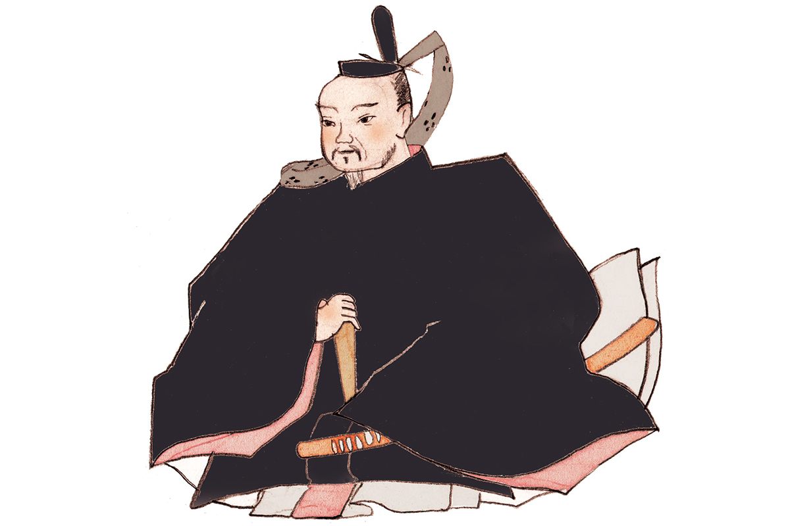

Префектура Айти · Нагоя · история
Наримаса Сасса: верный вассал Нобунаги, который бросил вызов Хидэёси

Наримаса Сасса до конца остался верен Нобунаге Оде и после его гибели долго не желал подчиняться Хидэёси Тоётоми. Ради союза против нового хозяина страны он зимой перешёл через Северные Альпы, а место, где он родился, и сегодня отмечено камнем в одном из районов Нагои.
Эпоха
Время воюющих провинций
С конца XV до конца XVI века Япония жила в непрерывных войнах. Сёгунат Муромати окончательно потерял власть, и место прежних военных губернаторов по всей стране заняли самостоятельные князья, даймё. Эту эпоху называют периодом Сэнгоку, «воюющих провинций», и её полководцы до сих пор остаются героями легенд, книг и сериалов.
Один из них, Наримаса Сасса (около 1536–1588), родился в провинции Овари, на западе нынешней префектуры Айти. Род Сасса возводил себя к Оми-Гэндзи, ветви древнего рода Минамото из провинции Оми у озера Бива.
Путь
От телохранителя до правителя провинции
Наримаса начинал в «умамавари», личной конной охране Нобунаги Оды (1534–1582), первого из трёх объединителей Японии (подробнее о нём в статье Нобунага Ода). Талант заметили, и он поднялся до даймё, которому принадлежала целая провинция. По преданию, Нобунаге он был предан всей душой. Когда в 1582 году господин погиб в храме Хонно-дзи в Киото, власть в доме Ода перешла к Хидэёси Тоётоми (1537–1598), и Наримаса вместе с Иэясу Токугавой (1543–1616) выступил против него.
Своими землями он правил старательно. Провинция Эттю, нынешняя префектура Тояма, страдала от наводнений, и Наримаса построил там дамбы, чем заслужил любовь крестьян. Славился он и щедростью: говорят, вассалам он давал больше земли и риса, чем обещал вначале.
1584
Переход через Северные Альпы
Самая известная история о Наримасе случилась в конце 1584 года, после битвы при Комаки и Нагакутэ, где Иэясу воевал с Хидэёси (о ней рассказывает статья о замке Инуяма). Иэясу заключил мир, а Наримаса хотел уговорить его продолжить борьбу. Чтобы попросить о помощи, он в самые морозы перешёл через Северные Альпы и добрался до Хамамацу в провинции Тотоми, на территории нынешней префектуры Сидзуока. Этот поход называют «Сарасара-гоэ».
Цена оказалась страшной: по преданию, половина его людей замёрзла в горах. В замке Хамамацу Иэясу принял Наримасу, но твёрдого ответа так и не дал.
Легенда
Чёрная лилия
Под конец жизни Наримаса, как рассказывают, оказался втянут в соперничество двух женщин Хидэёси. Главной жене Хидэёси, Онэ (около 1548–1624), он подарил редкий цветок, чёрную лилию, и она очень обрадовалась. Узнав об этом, наложница Хидэёси Ёдо-доно (1569–1615), мать его наследника, раздобыла чёрные лилии ещё красивее. Онэ была уязвлена и возненавидела Наримасу за то, что он выставил её на посмешище. Узнав обо всём, Хидэёси будто бы и вынудил его покончить с собой. Правда ли это, неизвестно, но легенда пережила века.
Хроника
Жизнь Наримасы Сассы
- 1536. По преданию, родился в замке Хира в уезде Касугаи провинции Овари.
- 1560. Двое старших братьев один за другим внезапно умирают, и Наримаса становится главой рода.
- 1561. В битве при Морибэ вместе с соратником убивает вражеского полководца и получает громкую славу.
- 1567. Назначен главой «курохоро-сю», отборного отряда Нобунаги, воины которого носили на спине чёрные плащи-хоро.
- 1570. Перед битвой при Анэгаве с небольшим отрядом конной охраны прикрывает отход войска у горы Хассо и умело использует стрелков с аркебузами.
- 1578. Вместе с Кацуиэ Сибатой (подробнее в статье Кацуиэ Сибата) идёт в провинцию Кага против войск Уэсуги, вторгшихся в провинцию Ното, но после падения замка Нанао отступает.
- 1580. Становится хозяином замка Камэяма в провинции Тамба.
- 1584. В битве при Комаки и Нагакутэ делает вид, что поддерживает Хидэёси, но встаёт на сторону Иэясу Токугавы и Нобукацу Оды, сына Нобунаги. Начинается битва за замок Суэмори.
- 1585. Хидэёси сохраняет ему жизнь, но отбирает владения.
- 1588. Совершает самоубийство в храме Хоон-дзи в Амагасаки, в провинции Сэтцу.
Где увидеть
Замок Хира в Нагое
От замка, где родился Наримаса, ничего не осталось, но место помнят. Замок Хира стоял на севере нынешнего района Ниси в Нагое, у реки Сёнай, и прикрывал подступы к замку Киёсу (о нём статья Замок Киёсу). Его построил отец Наримасы. Это была небольшая усадьба-крепость, примерно 75 на 80 метров, окружённая двойным рвом. После 1575 года, когда Наримаса получил земли в провинции Этидзэн, замок забросили.
Сегодня на месте замка стоит буддийский храм Коцу-дзи. На его территории, рядом с кладбищем, поставлен камень с надписью «Руины замка Наримасы Сассы». Мэрия района Ниси включила это место в пешеходный маршрут вдоль реки Сёнай длиной около 4,2 км. Маршрут начинается у станции метро Сёнай-рёкути-коэн.
Руины замка Хира, храм Коцу-дзи
- Адрес
- префектура Айти, Нагоя, район Ниси, Хира, 3-тёмэ
- Как добраться
- от станции метро Сёнай-рёкути-коэн (линия Цурумаи) по пешеходному маршруту района Ниси вдоль реки Сёнай
- Сайт
- city.nagoya.jp
Остальные места, связанные с Наримасой, лежат за пределами Айти: дамбы его времени вспоминают в префектуре Тояма, а умер он в храме Хоон-дзи в Амагасаки, в префектуре Хёго.
Фото: Мария Араи (иллюстрация).